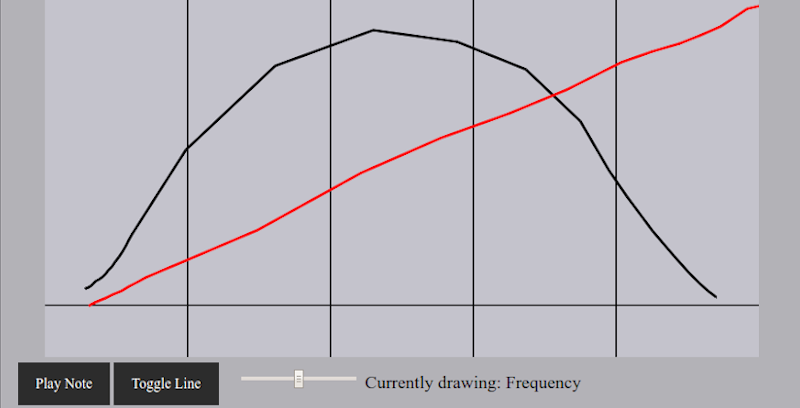

Draw Tones!
Background
A few years ago I started a test project that would allow a user to have fine grained control over a tone by drawing the frequency and volume envelopes themselves. I've since come back to the project and added a little polish. You can find the app below.
Skip the words and jump to it!
Some details
The idea is simple (and if you follow the link you'll see the implementation is even simpler), what if a creator could just draw what they wanted their sound to be? This project emerged out of that idea, and basic follows the vision. Albeit a rather simple more proof-of-concept version of that vision. I won't go into details here about how this was done (as it's actually rather simple) becuase the entire source, a little under 200 lines with some javascript glue, is available on github.
Still not convinced? Check out this sweet screenshot showing a tone with an approximately gaussian volume envelope and a chirping frequency.

Notice that the above interface is plain:
- "Play Note" does exactly as it sounds (makes a sound)
- "Toggle Line" switches between volume and frequency input
- The slider allows you to change the timescale of the program With that in place you can freely draw on the canvas to creat the tones of your dreams!
Now go ahead and create your own sounds! Please share anything cool you come up with!
This project was created with clojurescript and the sablono library. You can see the entire file here.